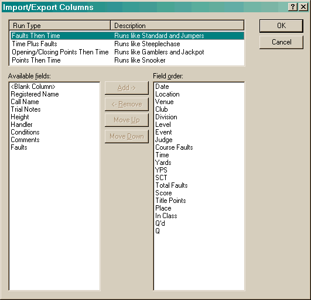

The Assign Columns dialog is used in several locations. It is used when configuring the columns in each of the main views. It is also used when importing and exporting data.

The items listed in the Run Type list will be different depending on where this dialog is started from. When started from a main view that has a splitter, the view that currently has focus will determine the items visible. When importing and exporting data (displayed image above) it is very important to make sure that you configure each of the items in the Run Type list.
The fields listed on the left are all the fields that it is possible to configure. The fields listed on the right are the fields that are currently in use. These can be ordered by using the Move Up and Move Down buttons. Use the Add and Remove buttons to move the fields back and forth. The Reset button can be used to change all values to their original values. In addition, when importing and exporting data, there is a special field, <Blank Column>, that can be used to skip fields that are in the imported data, or to create blank columns when exporting.